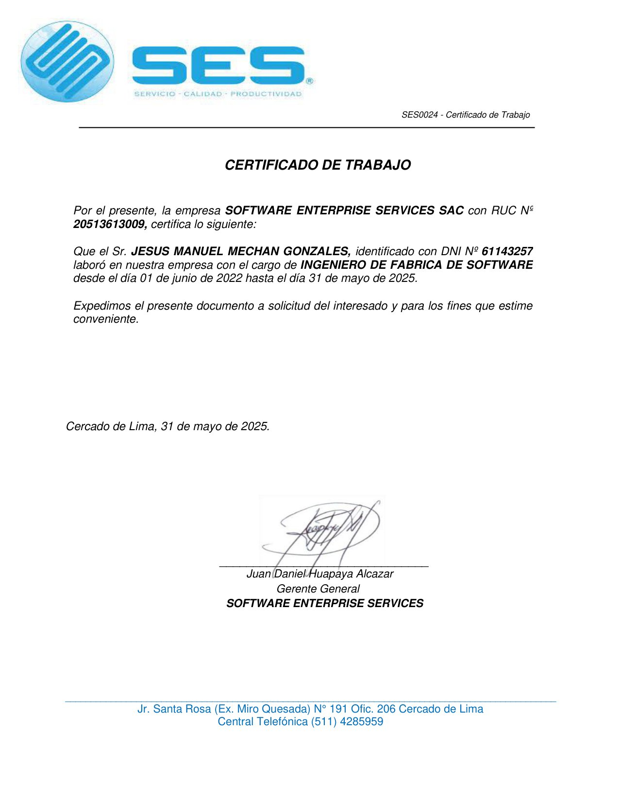
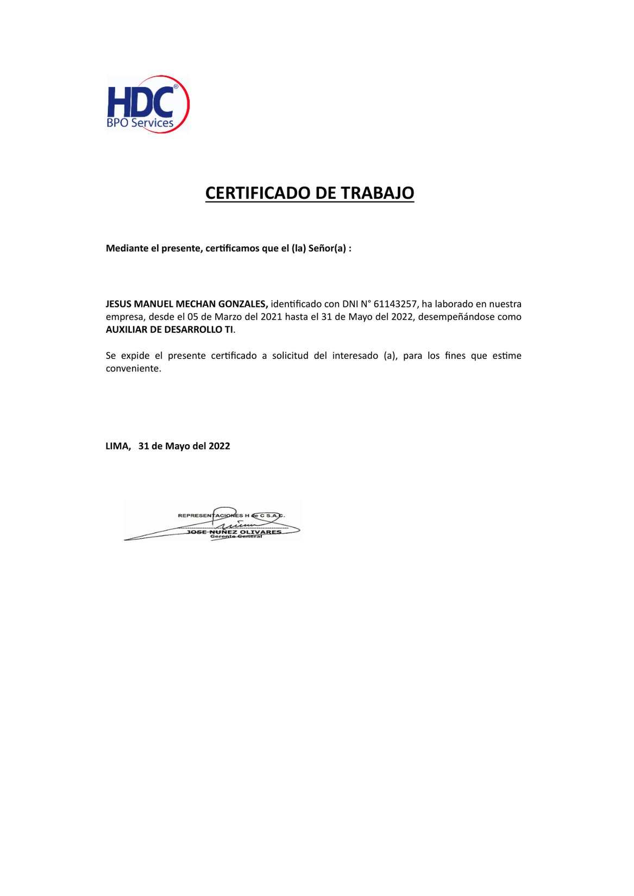
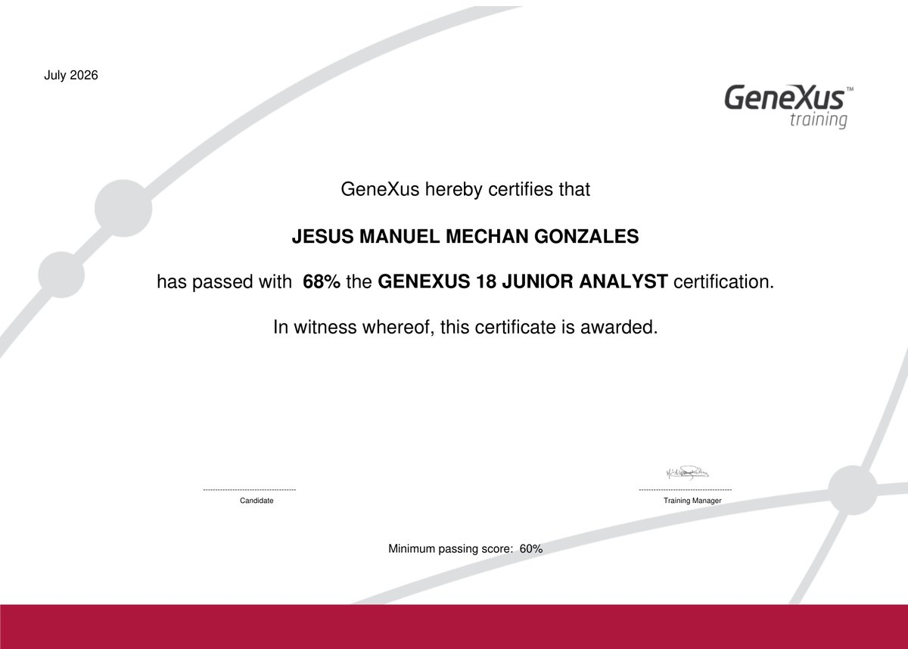
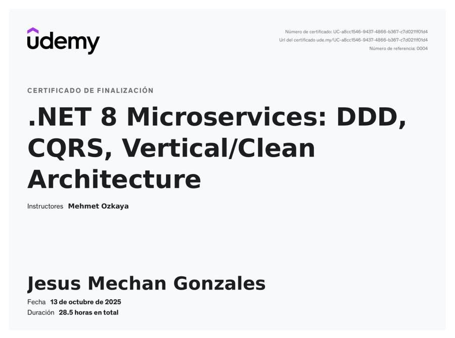
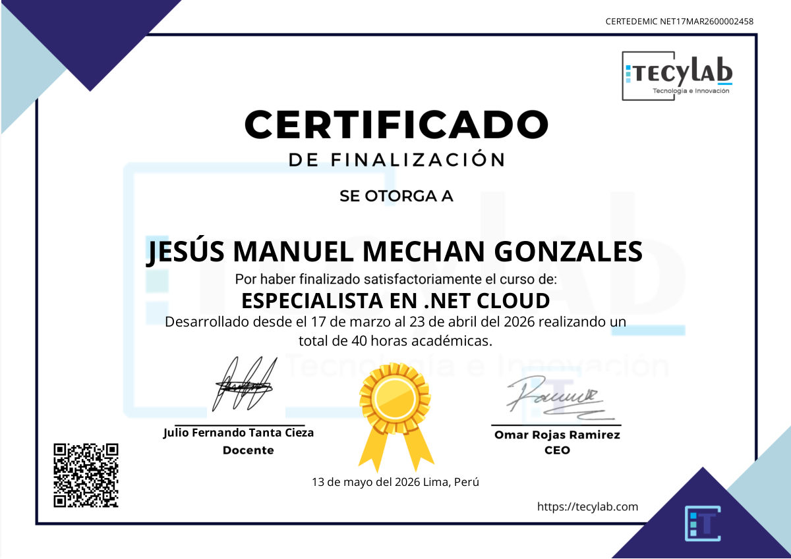

Jesús Manuel Mechan Gonzales
Desarrollador Full Stack · .NET y Angular
Dominios
Backend .NET (C#, .NET Core), Angular, TypeScript, Java, SQL Server, Oracle, APIs REST, CI/CD y Scrum. Cuatro años desarrollando aplicaciones web full stack.
Skills
C# / .NET
Angular
SQL Server / Oracle
Java
Git / GitLab
TypeScript
Scrum
Comunicación
Trabajo en equipo
Análisis
Liderazgo
Educación
UTP — Ingeniería de Software
(Estudios en curso. Arquitectura, calidad de software y desarrollo web.)
SENATI — Desarrollo de Software
(Formación técnica superior. Egresado.)
Marcos de Desarrollo Web — 48308
(Curso UTP. HTML, CSS, JavaScript y Tailwind CSS.)
Inglés técnico
(Lectura y uso de documentación técnica en inglés.)
Experiencia
OT
Software Enterprise Services — OTASS
- Analista funcional en el desarrollo de sistemas para OTASS.
- Levantamiento, análisis y documentación de requerimientos funcionales y técnicos.
- Coordinación con usuarios finales, equipo de desarrollo y QA para la validación e implementación de soluciones.
- Diseño e implementación de módulos para el registro y control de caja chica y reembolsos.
- Desarrollo de módulo para la derivación de solicitudes, incluyendo flujos de aprobación.
- Desarrollo full stack: implementación de funcionalidades en frontend con Angular 17 y backend en Java.
- Diseño, modelado y mantenimiento de base de datos en Oracle (tablas, procedimientos almacenados, funciones y optimización de consultas).
- Desarrollo y consumo de APIs RESTful para la integración entre frontend y backend.
- Participación en pruebas funcionales, despliegues y mejora continua del sistema.
HO
Holinsys
- Participación en el desarrollo y mantenimiento de soluciones backend para los proyectos de la empresa, realizando seguimiento y control de proyectos activos.
- Implementación de mejoras y nuevas funcionalidades en el sistema COLPA, trabajando en la capa Web y Web API, así como en la elaboración de documentación técnica para facilitar la mantenibilidad y transferencia de conocimiento.
- Desarrollo e integración de endpoints y servicios Web API para el proyecto Homologaciones, considerando criterios de seguridad, escalabilidad y eficiencia.
- Participación en el desarrollo de una arquitectura basada en microservicios utilizando .NET 8, contribuyendo en la implementación y mantenimiento de servicios independientes y escalables.
- Implementación y gestión de almacenamiento de archivos mediante Azure Blob Storage, incluyendo el uso de versionado de blobs para el control, recuperación y administración de diferentes versiones de archivos.
- Aplicación de buenas prácticas de desarrollo backend y participación en la documentación técnica de las soluciones implementadas.
SE
Software Enterprise Services
- Gestión de requerimientos.
- Seguimiento, asignación y atención de incidentes.
- Implementar mejoras de seguridad en los sistemas de SES para corregir observaciones obtenidas de las pruebas de Ethical Hacking, con apoyo de las herramientas OWASP ZAP y SonarQube.
- Actualizar el Sistema de Compras y Pagos para permitir la realización de pagos de manera recurrente.
- Análisis y desarrollo de nuevos requerimientos para la torre de finanzas SES.
SP
Software Enterprise Services — Southern Peaks Mining
- Analista funcional en el desarrollo de sistemas para Southern Peaks Mining.
- Coordinar reuniones con usuarios para levantar requerimientos.
- Coordinación con equipos de desarrollo y validación de soluciones.
-
Desarrollo del Sistema Entregas a Rendir:
- Generar módulos para el registro de anticipos, caja chica y reembolso.
- Generar módulo para la derivación de las solicitudes previamente registradas.
- Generar módulo para el registro de facturas que se asociarán a las solicitudes de anticipo, caja chica y reembolso.
- Generar proceso para la derivación interna para usuarios pertenecientes al área de administración.
-
Implementación del Sistema Control de Accesos:
- Generar un módulo Administración de Accesos para la gestión de usuarios, roles y perfiles que interactuarán con los sistemas.
- Generar un módulo Mantenedores para la gestión de menús, datos maestros, sistemas, áreas, centros de costos y gestión de credenciales SUNAT.
-
Implementación del Sistema Workflow:
- Generar el módulo de mantenedores para gestionar las opciones y estados de las actividades por cada flujo de trabajo.
- Generar el módulo de configuración para gestionar los flujos de trabajo parametrizables para ser consumidos por los sistemas.
BC
Software Enterprise Services — Bank of China
- Analista funcional en el desarrollo de sistemas para Bank of China (BOC).
- Coordinar reuniones con usuarios para levantar requerimientos.
- Coordinación con equipos de desarrollo y validación de soluciones.
-
Implementación del Sistema Gestión Pago Proveedores:
- Generar un módulo de formularios para la gestión de pagos a proveedores, reembolsos y planillas.
- Generar un módulo de Consulta de Formularios para visualizar su detalle y su trazabilidad en el workflow.
- Generar un módulo Administración para gestionar la lista de tipos de cambio, colaboradores y presupuestos.
- Generar un módulo de Programación de Pagos para visualizar los formularios en cierta actividad y poder derivar de forma masiva.
- Generar un módulo de Reportes para exportar en formato Excel las consultas como reporte de pagos, presupuestos ejecutados, pagos semanales y formularios.
-
Implementación del Sistema Control de Accesos:
- Generar un módulo Administración de Accesos para la gestión de usuarios, roles y perfiles que interactuarán con los sistemas.
- Generar un módulo Mantenedores para la gestión de menús, datos maestros y sistemas.
-
Implementación del Sistema Workflow:
- Generar el módulo de Mantenedores para gestionar las opciones y estados de las actividades por cada flujo de trabajo.
- Generar el módulo Configuración para gestionar los flujos de trabajo parametrizables para ser consumidos por los sistemas.
- Atención de nuevos requerimientos.
- Atención de incidentes.
- Servicio de mantenimiento mensual a los sistemas.
SCI
Software Enterprise Services — Control de Inventarios
- Participé en el desarrollo del sistema interno Control de Inventarios (SCI), utilizado para la gestión de activos de la empresa.
- El sistema permite el ingreso de activos, salida a colaboradores, proveedores, clientes, traslado entre almacenes, reingresos, etc.
- Desarrollé funcionalidades y módulos utilizando tecnologías como .NET Core 3.1, SQL Server y Angular v12, asegurando eficiencia en el flujo de operaciones logísticas.
- Documenté los procesos implementados, brindé soporte a usuarios internos y participé en las pruebas QA (calidad) y UAT (aprobación de usuario final).
HD
HDC BPO Services
- Documentar el desarrollo del sistema en desarrollo y de los sistemas existentes.
- Automatización de procesos de carga.
- Solución a incidencias notificadas por mi jefe inmediato.
- Realizar cargas de información enviada por los clientes a los sistemas de la empresa.
- Crear manuales de usuario.
Certificados

Certificado de trabajo de Software Enterprise Services S.A.C.
Junio 2022 a Mayo 2025
Ver PDF
Certificado de trabajo de HDC BPO Services
Marzo 2021 a Mayo 2022
Ver PDF
GeneXus 18 Junior Analyst
GeneXus Training · Certificación oficial
Ver PDF · Jul 2026
.NET 8 Microservices: DDD, CQRS y Clean Architecture
Udemy · Mehmet Ozkaya · 28.5 horas
Ver PDF · Oct 2025
Especialista en .NET Cloud
Tecylab · 40 horas académicas · Lima
Ver PDF · May 2026